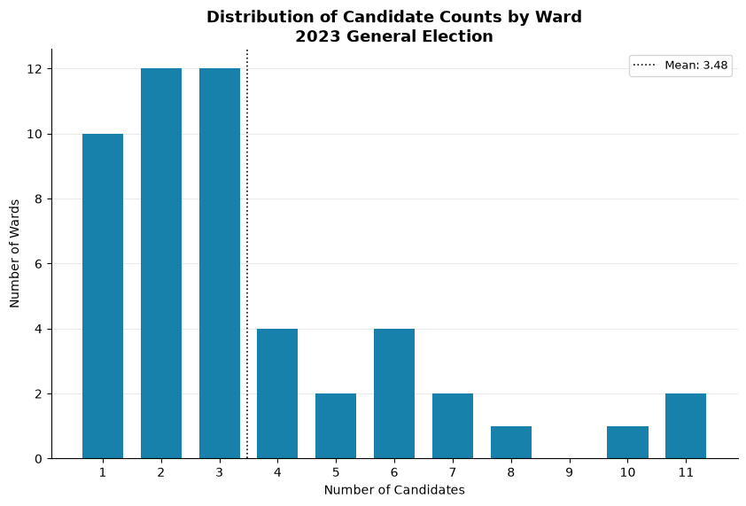
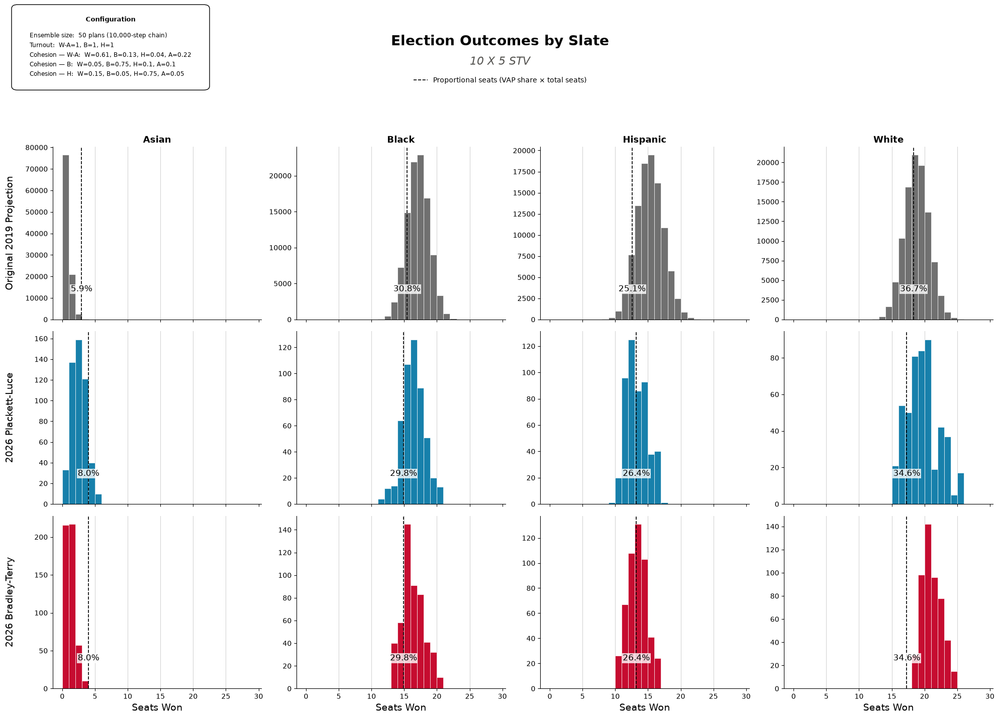
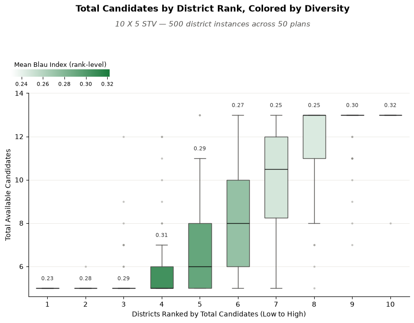
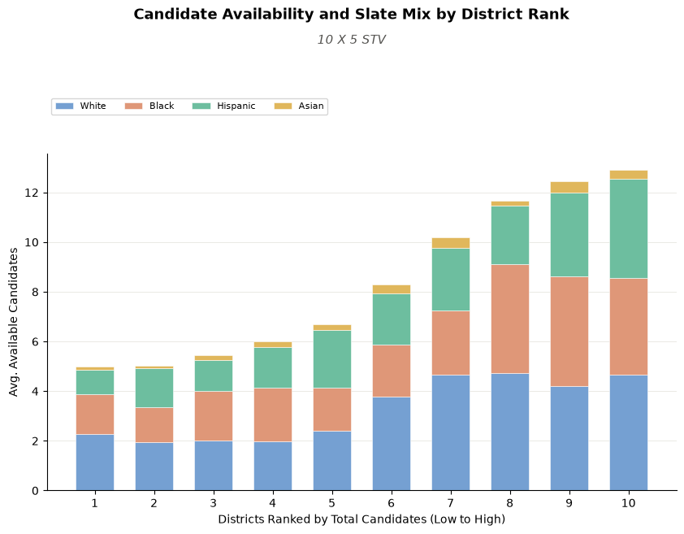
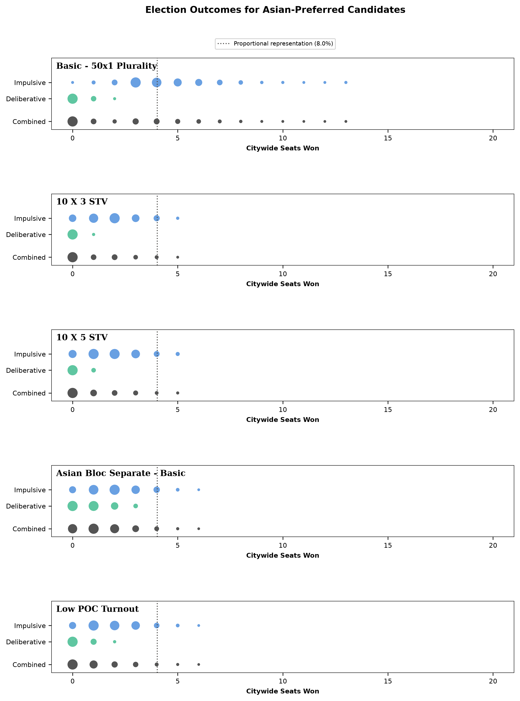

Abstract
In April 2019, the Metric Geometry and Gerrymandering Group published a study on reform proposals and alternative electoral systems for Chicago City Council, stating that many observers would agree that Chicago's City Council ward system is entrenched in problematic gerrymandering, segregation, and inefficiency — issues many would argue still persist today. The goal of the 2019 study was to apply mathematical models to analyze the then-active ward plan and propose reforms to address these problems. This report seeks to replicate and update the results of the 2019 study by using the more current ward plan, newer demographic data, and more refined techniques that the lab has since developed. We will additionally be examining the impacts of the included reform proposals on representation for Asian voters — a voting bloc that has consistently gone underrepresented in Chicago City Council.
1. Background
The Chicago city council—both then and now—elects council members (alderpersons) from 50 single-member districts (wards) using a runoff system that sees the top two vote-getters in a general election face each other in a runoff election if no candidate has secured a majority vote in the general. Since 2019, Chicago has had another city council election in 2023 in which 14 new members were elected to city council. Out of 50 wards, 36 reelected their incumbent. It was also the first city-wide election to use the new district maps drawn up after the latest decennial census in 2020. Combined with the shifting demographics and geography of the city, we thought it worthwhile to revisit the 2019 report and apply more mature methods to an analysis of Chicago city council elections.
This report employs new and updated tools like GerryChain and VoteKit in order to simulate a variety of electoral systems and scenarios — both from the original report and more novel configurations. Primarily, we look at simulations of multi-member districts elected by Single Transferable Vote (STV), low person-of-color turnout, and optimizing for larger Asian bloc percentage-share in both 50 and 10 district plans.
2. Data
2.1 Data units, collection, preprocessing
In this report, we have updated our demographic data source to use the 2020 Decennial Census from the United States Census Bureau — the 2019 report utilized the 2010 Decennial Census. The census provides census block-level data. Out of the 98,230 blocks located in Cook County, 38,785 of these fall within Chicago city boundaries. Before we generate our mapping ensemble, we aggregate data from census blocks up into ward precincts to serve as the base geographic unit.
Shapefile data for Chicago's wards and precincts has been obtained from the Chicago Open Data Portal. By December 1 in the year following the release of every Decennial Census, Chicago's ward boundaries must be redrawn to reflect the population as demonstrated in the census. We use the most recent ward and precinct boundaries, which were redrawn on May 16, 2022. It is notable that while the overall count of 50 wards across the city remains the same, the total number of precincts has dropped from 2,069 to 1,291 — a significant decrease of nearly 40%.[1]
2.2 Racial demographics and population shifts
This report mirrors the 2019 study in how it manages distinctions between racial demographics: Black referring to Black non-Hispanic population, White for White non-Hispanic, Asian for Asian non-Hispanic, and Hispanic/Latino for all people designated with the Hispanic ethnicity in the census regardless of race.
Table 1. Chicago population by race and ethnicity across census and ACS vintages.
| Race | 2000 (Census) | 2010 (Census) | 2009-2013 (ACS) | 2013-2017 (ACS) | 2020 (Census) |
|---|---|---|---|---|---|
| Black (non-Hispanic) | 36.4% | 32.4% | 31.9% | 30.1% | 28.7% |
| White (non-Hispanic) | 31.3% | 31.7% | 32.2% | 32.7% | 31.4% |
| Hispanic | 26.0% | 28.9% | 28.7% | 29.0% | 29.8% |
| Asian (non-Hispanic) | 4.3% | 5.4% | 5.7% | 6.2% | 6.9% |
| Two or More Races | 1.6% | 1.3% | 1.3% | 1.7% | 2.6% |
| Amer. Indian/Alaska Native | 0.1% | 0.2% | 0.1% | 0.1% | 0.1% |
| Some Other Race | 0.1% | 0.2% | 0.2% | 0.2% | 0.4% |
| Nat. Hawaiian/Pacific Islander | 0.03% | 0.02% | 0.02% | 0.02% | 0.02% |
| Total Population | 2,896,016 | 2,695,598 | 2,706,101 | 2,716,450 | 2,746,424 |
Notable here is the slight growth in share for both the Hispanic and Asian populations — and the sizeable decrease of the Black share of the population, around a 3.7% decrease since the 2010 census. While neighborhood and community demographic makeup in the city continues to change, Chicago remains highly segregated, with 287 voting precincts being more than 80% Black and 116 being more than 80% Hispanic. At the same time, 805 precincts are less than 20% Black, and 744 are less than 20% Hispanic.
Table 2. Number of Chicago precincts falling in each band of population share, by racial/ethnic group. One of the city's 1,291 precincts has no recorded population and is excluded, leaving 1,290.
| Precincts (1,290 total) | 0-20% | 20-40% | 40-60% | 60-80% | 80-100% |
|---|---|---|---|---|---|
| White | 588 | 165 | 211 | 269 | 57 |
| Black | 805 | 73 | 55 | 70 | 287 |
| Hispanic | 744 | 201 | 134 | 95 | 116 |
| Asian | 1,187 | 85 | 11 | 4 | 3 |
[1] The Chicago Board of Elections cites that efficiency concerns, along with the continued popularity of mail-in ballots following the COVID-19 pandemic, are the primary driver in decreasing the overall number of precincts — and therefore polling places. We believe this is important to note, as polling place availability and accessibility (or lack thereof) is a known historical determinant in electoral disenfranchisement and representation. ↩
3. Methodology
3.1 Districting Plan Ensembles
To generate a sufficient number of distinct districting plans, we use GerryChain to run a 10,000-step ReCom chain and subsample 50 plans that will be used in our election simulations. We do this a total of four times — once for each of the following configurations:
- 50 × 1 ensemble — each plan has 50 single-member districts built from precincts
- 10 × $m$ ensemble — each plan has 10 multi-member districts built from precincts
- 50 × 1 optimized ensemble — each plan has 50 single-member districts built from precincts, but we attempt to sample plans that have a higher number of districts with an Asian population over 20%.
- 10 × $m$ optimized ensemble — each plan has 10 multi-member districts built from precincts, but we attempt to sample plans that have a higher number of districts with an Asian population over 15%.
Given that Asian voters have been consistently underrepresented within Chicago's city council, a goal of the report is to understand the conditions under which proportional representation could be achieved — including intentional redistricting to optimize for more wards with larger Asian populations. We accomplish this by using the Gingleator optimizer within the GerryChain library. The optimizer will perform “short bursts” of 100 steps to identify and select a plan according to a provided scoring function and target population threshold. We use the default score function that simply keeps track of plans with the highest number of districts that meet our threshold criteria. In the case of 50 district plans, we set that threshold at 20%, and in 10 district plans we set it at 15%.
3.2 Voter Blocs and Candidate Slates
Mirroring the 2019 report, we consider the four largest racial demographic groups when identifying blocs of voters with shared preferences and slates of candidates with similar policies and positions. Slates are limited to and delineated by Black, Asian, Hispanic, and White candidates. Voter blocs follow this with a major exception: we made the decision to combine White and Asian voters into a single bloc. The reasoning for this is guided by evidence that Asian and White voters in Chicago demonstrate similar behaviors and preferences at the ballot box, particularly when looking at the last several mayoral and city council elections. While there currently exists no expansive data sets or analysis examining Asian voting behavior in Chicago elections, a handful of examples do exist: MGGG's exploration of racially polarized voting and Greater Cities Institute's application of ecological inference on voters in the 2023 mayoral election. Considering the similarities in behavior between the two blocs, we model them as a single bloc for the purposes of this analysis.
3.3 Candidate Availability and Pool Size
To simulate candidate availability per-ward for each voting bloc, we make a few decisions and assumptions guided by available evidence from previous Chicago general city council elections. The first is deciding how many total candidates will be on the ballot for a given ward. In 2023, the average number of candidates running across all 50 wards (not counting write-ins) was approximately 3.48, with a large number of wards featuring anywhere between one to four candidates in the election, and fewer featuring counts larger than five.

To model this in our simulation, we sample from the geometric distribution. For 50 district configurations, we use a probability value of $0.2$, which provides an expected value of $5$ — slightly above the average total candidates running per district in 2023. For 10 district configurations, we use a probability value of $0.1$, which provides an expected value of $10$. Generally, we'd expect plans with larger districts to see more candidates pursuing seats on council. We sample in this way for every single district in every subsample of the districting ensemble, allowing some variance in total available candidates across districts and plans. However, because generating values in this way could result in a candidate pool size that is large enough to be unrealistic (and computationally expensive), we set a cap on the total candidates by making a calculation with the district VAP:
$$Max\ Candidates = \lceil \ln(District\ VAP) \rceil$$
The application of the logarithmic function with each district's VAP as input serves to mirror the maximum observed candidates in the 2023 general election — 11 candidates in both Ward 5 and Ward 6. Since each ward in the existing 50 district maps contains an average of 44,000 constituents in the voting age population, this calculation will result in 11 total candidates. Using the same formula, maps with 10 districts will be expected to see a cap of 13 candidates — the reasoning here being that larger districts with more seats available would see a larger candidate pool, with the size limited by the willingness or ability of would-be candidates to sustain their campaigns until election day. Our “floor” minimum value is trivial by comparison — here we set a minimum value $m$ that is equal to the number of seats per district, so we never allow a sampled number to be lower than the per-district seats.
Next, we make an assumption that the racial composition of the slate pool will be roughly proportional to that of the VAP in each district. We use the bloc proportions to create an interval, with the intent of sampling candidates of different slates from it. However, before we do we first square each element, normalizing the “squared interval” over the sum of the squared values. This creates an “exaggeration” effect when we sample slate candidates. In other words, if a district has a large Black VAP, it's even more likely that the Black voter-preferred slate of candidates will be larger than the others. Similarly, if the Asian VAP is small it's much less likely that the Asian voter-preferred slate will have many candidates — if any, since we allow for slates to be empty. This is intended to model how community dynamics, segregation, or lack of institutional support may impact candidate availability across geography with respect to race.
3.4 Voter Profile and Ballot Generation
For each district in all 50 district plans of our ensemble, we generate voter preference profiles — a collection of ballots from voters that rank available candidates. These rankings are determined by using VoteKit's Plackett-Luce and Bradley-Terry ballot generators, which model impulsive voter behavior and deliberative voter behavior, respectively. Each assumes that each voter bloc has a preference interval for each slate of candidates, along with a tuple of cohesion parameters — one parameter for each slate.
Both generators share the same two-stage process, and they only differ in how the first stage plays out. Before any ballots are drawn, each bloc's preference interval is assembled by taking that bloc's cohesion for a given slate and slicing off a sub-interval of that width, then filling it in with the individual candidates of the slate according to their support. We govern the within-slate split with a set of Dirichlet alphas — in this report we hold all alphas at 1, which means that once a voter has decided to reach for a particular slate, every candidate on that slate is treated as equally preferred. The cohesion parameters (the rows of the matrices below) therefore do all the work of ordering slates against one another, while the interval handles the ordering of candidates within a slate. What separates the two models is the story we tell about how a voter walks through that interval to produce a ranking.
The Impulsive Voter
The Plackett-Luce generator builds a ballot from the top down, one position at a time. Starting from the first-place slot, a voter in bloc $X$ reaches for a candidate from slate $S$ with probability equal to that bloc's cohesion for the slate, $\pi_{X,S}$; whichever slate is chosen then supplies a specific candidate by sampling from that slate's preference interval without replacement. The voter repeats this for the next position, renormalizing over whatever slates still have candidates left, and keeps going until the ballot is full. We call this the impulsive voter because they never look back — each ranking is a snapshot decision made in the moment, with no reconsideration of the choices already committed higher up the ballot. Concretely, a voter picks their favorite, then their next favorite from what remains, and so on, so the probability of a given slate ordering is just the product of these sequential draws.
The Deliberative Voter
The Bradley-Terry generator instead asks the voter to weigh the ballot as a whole. Rather than filling positions in sequence, the probability of a complete ranking is proportional to the product of the pairwise slate preferences across every pair of slates on the ballot — for a ranking that places slate $S_i$ above slate $S_j$, each such head-to-head contributes a factor of $\pi_{X,S_i} / (\pi_{X,S_i} + \pi_{X,S_j})$. A voter effectively runs every candidate against every other in their head and only then settles on the ordering that is most internally consistent with all of those matchups at once. We call this the deliberative voter, since the ranking reflects a considered comparison of the full field rather than a run of top-down impulses. The candidate-filling stage is identical to Plackett-Luce — once the slate ordering is fixed, specific candidates are drawn from each slate's preference interval — so the two models diverge only in how much of the ballot a voter is imagined to be considering at once.
Cohesion Matrices
Rows are voter blocs, columns are candidate slates; each row sums to 1.
Standard 3-bloc:
Table 3. Standard three-bloc cohesion matrix: each voter bloc's support split across the candidate slates (rows sum to 1).
| bloc ↓ / slate → | White | Asian | Black | Hispanic |
|---|---|---|---|---|
| White-Asian | 0.61 | 0.22 | 0.13 | 0.04 |
| Black | 0.05 | 0.10 | 0.75 | 0.10 |
| Hispanic | 0.15 | 0.05 | 0.05 | 0.75 |
The White-Asian row is the VAP-weighted average (81% White / 19% Asian) of the underlying White and Asian rows (below).
Table 4. Four-bloc cohesion matrix with White and Asian voters modeled as separate blocs (rows sum to 1).
| bloc ↓ / slate → | White | Asian | Black | Hispanic |
|---|---|---|---|---|
| White | 0.70 | 0.10 | 0.15 | 0.05 |
| Asian | 0.20 | 0.75 | 0.03 | 0.02 |
| Black | 0.05 | 0.10 | 0.75 | 0.10 |
| Hispanic | 0.15 | 0.05 | 0.05 | 0.75 |
The cohesion parameters here have been selected based on available estimates (from ecological regression) from the earlier 2019 MGGG study on Chicago city council reform, as well as a mayoral election analysis from the Greater Cities Institute.
3.5 Voting Rules
Elections for each district are simulated using VoteKit's Elections module. We use the following voting rules with the corresponding district configurations:
Table 5. Voting rules used in the report and the district configurations they are applied to.
| Voting Rule | District Configs | Seats/District | Description |
|---|---|---|---|
| Plurality | 50 × 1 | 1 (single-winner) | Voters' first choices are tallied and the candidate with the most votes wins outright — no majority required. This is the closest to Chicago's current status-quo. |
| IRV (Instant-Runoff Voting) | 50 × 1 | 1 (single-winner) | The single-winner case of STV: last-place candidates are eliminated round by round and their ballots transferred to the next-ranked choice until one candidate holds a majority. |
| STV (Single Transferable Vote) | 10 × 5, 10 × 3 | 5 or 3 (multi-winner) | Multi-winner ranked-choice rule using the Droop quota: candidates reaching the quota are elected and their surplus is redistributed, while last-place candidates are eliminated and transferred, until all seats are filled. |
For each system, tiebreaks are performed randomly when needed.
4. Election Scenarios
In the following sections, we highlight the results of a number of electoral scenarios that were simulated using the methodology described earlier. We first draw a comparison to the results of the original 2019 study using 10 × 5 STV and 10 × 3 STV. Then, we simulate Chicago's current status quo using 50-district maps with Plurality and IRV voting rules. Next, we attempt to optimize 10 × 5 and 50 × 1 district plans for a larger number of higher-percentage Asian VAP districts. Lastly, we wrap up with some exploratory analysis of our findings.
The total number of election outcomes per-simulation is set by the district configuration: each ensemble subsamples 50 plans, every plan runs one election per district, and every district profile is regenerated across replicates of preference profiles to achieve more variation in ballots across trials. The 50 × 1 configurations use 5 replicates while the 10-district configurations use 20, and every profile is generated under both voter models (Plackett-Luce and Bradley-Terry), so the count follows directly from the districts-per-plan, replicate count, and two voter models of each configuration:
Table 6. Number of election outcomes produced by each district configuration.
| District Configuration | Districts / Plan | Sampled Plans | Replicates | Voter Models | Election Outcomes |
|---|---|---|---|---|---|
| 50 × 1 | 50 | 50 | 5 | 2 | 25,000 |
| 10 × 5 | 10 | 50 | 20 | 2 | 20,000 |
| 10 × 3 | 10 | 50 | 20 | 2 | 20,000 |
4.1 Comparison to 2019 Report — 10 × $m$ STV
We begin by taking the project results of a 10 × 5 STV electoral system from the 2019 study and compare it against the results of our own using the Plackett-Luce and Bradley-Terry voter models. Across all four slates, we see that the expected number of seats won by each slate in this report's simulations are similar to those of the earlier study. Projected Asian representation remains below proportionality, though the impulsive voter model does suggest that winning two to four seats is a relatively common outcome in this system — with Asian voters achieving more than proportional representation a handful of times. This does not occur with the deliberative voter model, with the zero to one seats being the most expected outcome.
The Black voting bloc achieves slightly higher than proportionality on average across all three models, and Hispanic voters achieve very near proportional representation with the impulsive and deliberative models being centered around 13 to 14 seats. For Hispanic voters, this is a modest drop in expected representation from the 2019 projections that were closer to 15 or 16 seats. In all three models, White voters remain overrepresented.
In a 10 × 3 STV electoral system, the results are largely the same for each slate, with the exception that Black voters achieve higher than proportional representation at 10 seats on average. Keep in mind that in this system there are 30 city council seats rather than 50.



4.2 Status Quo — 50 × 1 Plurality/IRV
Here, we decide to look at simulating the electoral systems that are closest to Chicago City Council's status quo — a runoff system that has characteristics of both Plurality and IRV. While Black and Asian election outcomes don't significantly differ from 10 × $m$ STV, expected Hispanic representation sits below proportionality under both voting rules. This effect is more pronounced in the deliberative voting model. In contrast, White voters appear to be significantly more represented than what is proportional to that population — a difference that is, again, more apparent in the deliberative model.


Single-member wards (neutral districting), elected by Instant-Runoff Voting instead of plurality — otherwise the same setup as 50 × 1 Plurality.


4.3 Low Voter Turnout
In this scenario, we work with a 10 × 5 STV electoral system and reduce turnout for the Black and Hispanic voting blocs to 50% of the full-turnout baseline, with the combined White-Asian bloc's turnout reduced to 75% to reflect Asian voters' share of that combined bloc. In other words we ask, “What would the expected city council election outcomes be if voters of color turned out at a substantially reduced rate?” A few interesting observations can be made. First, while White voter representation remains around where it was in the full-turnout simulation, Black voters receive a small boost in representation while Hispanic voters see a drop that puts them below proportionality. This may not be surprising considering the degree to which racial groups are clustered around the city, in addition to the crossover support that Black and Hispanic candidates may receive. Perhaps more surprising is that Asian representation receives a slight boost, though it still falls short of proportionality. This effect could very well be the result of the decision to combine the White and Asian voting blocs within our simulations.


4.4 Optimizing for Larger Asian VAP Districts
We've observed that even in systems like STV — generally thought to be more favorable for securing minority representation — seats won by Asian candidates fall short of VAP proportionality in the context of Chicago City Council elections. Here, we attempt to optimize the maps used in our ensemble for a larger number of higher-percentage Asian VAP districts. This seems to have the most significant effect in a 10 × 5 STV electoral system — though proportionality for Asian voters is still not achieved in expectation.
Gingleator short-burst optimized ensemble, biasing the 10-district chain toward higher-Asian-VAP-share districts instead of the neutral ReCom chain the other STV runs use.


Single-member wards, IRV, with the same Gingleator opportunity-district optimizer applied to the 50-district ensemble.


Single-member wards, Plurality (PSMD), with the Gingleator opportunity-district optimizer applied — the plurality counterpart to the IRV-optimized run above.


5. Analysis and Discussion
In this section, we perform a brief analysis of our findings and discuss possible explanations for our observations. Since the report thus far has been primarily concerned with the consistently underrepresented Asian bloc, the scope of this exploration will be limited to this fact. Additionally, we'll be focusing on 10 × 5 STV as our electoral system of choice, given that it resulted in outcomes closer to proportionality than most other systems. To frame the analysis, we'd like to pose two questions to the reader that we will then attempt to answer:
- At what rates are Asian-preferred candidates available across districts?
- When Asian-preferred candidates are available, why might they not be elected?
First, we can get a sense of what the candidate pool size looks like across our districts by creating a box plot. Here, we aggregate 500 district instances across our 50 plans — first ordering by the number of candidates available in the pool of each district instance. Then, we color in each box with its average Blau index score. The Blau index gives us a measurement of categorical diversity or heterogeneity. It's calculated as follows:
$$B = 1 - \sum_{i=1}^{k} p_{i}^{2}$$
..where $k$ is the number of categories, and $p_i$ is the proportion of the population belonging to category $i$. In this case, it will provide an idea of how diverse our candidate pools are across districts — with $k$ being the slates represented in any given district instance. We see that many districts had between five and seven total candidates in the pool. It can also be observed that the districts with the highest counts of available candidates also have some of the largest average Blau index scores. Interestingly, the districts in rank position 4 have a high average Blau index score despite having a relatively smaller number of candidates on average.

Next, we'll look at a breakdown of total candidate availability across districts. We do a similar ordering and aggregation operation as before. Additionally, we keep track of the slate of each candidate so that we can better understand the breakdown of the total. We can see that compared to Black, White, and Hispanic candidates, Asian candidates make up a relatively small proportion of the average candidate share in the average pool. This suggests that Asian candidates aren't often available in the candidate pool — even among larger pools. This is easy to imagine, as the geographic clustering of racial groups might mean that even with a large candidate pool the racial demographics of that district might not boast a high (or even existent) Asian population.

In the context of our simulation, Asian-preferred candidates don't seem to be available often — even when candidate pools are larger. This brings us to our second question — when Asian-preferred candidates are available, why might they not be elected? We suspect two things at play here. The first is that the smaller relative proportion of the Asian VAP results in Asian-preferred candidates not accumulating enough votes to hit the droop quota. This makes sense, and it's visible in the figures of coalition win rate and first-choice vote share under each of the individual scenarios we explored earlier. A second possibility is that a “spoiler effect” is occurring when more than one Asian-preferred candidate is included in the pool and ends up splitting the Asian vote. In the table below, we collect the district instances where an Asian-preferred candidate was available, group by the number of Asian-preferred candidates available, and then look at the averaged win rate of each voter model.
Table 7. Among 10 × 5 STV districts with at least one available Asian candidate, the win rate for an Asian-preferred candidate (winning at least one seat), broken out by number of available candidates and voter model.
| Available Asian Candidates | Districts (plan × district instances) | Simulated Instances (per mode) | % Won — slate_pl | % Won — slate_bt |
|---|---|---|---|---|
| 1 | 68 | 1,360 | 100.0% | 40.4% |
| 2 | 20 | 400 | 98.5% | 26.5% |
| 3 | 4 | 80 | 100.0% | 50.0% |
| 4 | 2 | 40 | 77.5% | 0.0% |
Here we see a pattern consistent with a spoiler effect: in both the impulsive and deliberative models, Asian-preferred candidates win less often when two candidates are in the pool than when only one is (98.5% vs. 100% under the impulsive model, 26.5% vs. 40.4% under the deliberative model). It must be noted that the inclusion of three Asian-preferred candidates in the pool shows a win rate that matches or exceeds even a single candidate. This could potentially be due to the fact that if three Asian-preferred candidates are getting onto the ballot in the first place, it's very likely that the Asian VAP for the four district instances we observe this in is higher — and therefore more likely to elect an Asian-preferred candidate.
Taken together, we believe that these findings provide promise in understanding why Asian-preferred candidates are elected at sub-proportional rates. For the scope of this report, we will treat them as jumping off points for future analysis.
Appendix
A. Cross-Run Comparison

B. Configuration Reference
Table 8. Full list of simulated runs and their configuration parameters.
| Run Name | Districts | Seats | Voting Method | Voter Blocs | Turnout (bloc) |
|---|---|---|---|---|---|
| 50 × 1 Plurality | 50 × 1 | 50 | Plurality | W-A, B, H | 1.00 / 1.00 / 1.00 |
| Low POC Turnout | 10 × 5 | 50 | Single Transferable Vote (5 seats) | W-A, B, H | 0.75 / 0.50 / 0.50 |
| 10 × 3 STV | 10 × 3 | 30 | Single Transferable Vote (3 seats) | W-A, B, H | 1.00 / 1.00 / 1.00 |
| 10 × 5 STV | 10 × 5 | 50 | Single Transferable Vote (5 seats) | W-A, B, H | 1.00 / 1.00 / 1.00 |
| 10 × 5 STV - Larger Asian Districts | 10 × 5 | 50 | Single Transferable Vote (5 seats) | W-A, B, H | 1.00 / 1.00 / 1.00 |
| 50 × 1 IRV | 50 × 1 | 50 | Instant-Runoff Voting | W-A, B, H | 1.00 / 1.00 / 1.00 |
| 50 × 1 IRV - Larger Asian Districts | 50 × 1 | 50 | Instant-Runoff Voting | W-A, B, H | 1.00 / 1.00 / 1.00 |
| 50 × 1 PSMD - Larger Asian Districts | 50 × 1 | 50 | Plurality | W-A, B, H | 1.00 / 1.00 / 1.00 |
Table 9. Cohesion matrix shared across every simulated run above: each voter bloc's support split across the candidate slates (rows sum to 1).
| bloc ↓ / slate → | White | Asian | Black | Hispanic |
|---|---|---|---|---|
| White-Asian | 0.61 | 0.22 | 0.13 | 0.04 |
| Black | 0.05 | 0.10 | 0.75 | 0.10 |
| Hispanic | 0.15 | 0.05 | 0.05 | 0.75 |
Table 10. Dirichlet alpha parameters shared across every simulated run above: within-slate candidate weighting, held at 1 throughout so every candidate on a slate is treated as equally preferred.
| bloc ↓ / slate → | White | Asian | Black | Hispanic |
|---|---|---|---|---|
| White-Asian | 1 | 1 | 1 | 1 |
| Black | 1 | 1 | 1 | 1 |
| Hispanic | 1 | 1 | 1 | 1 |